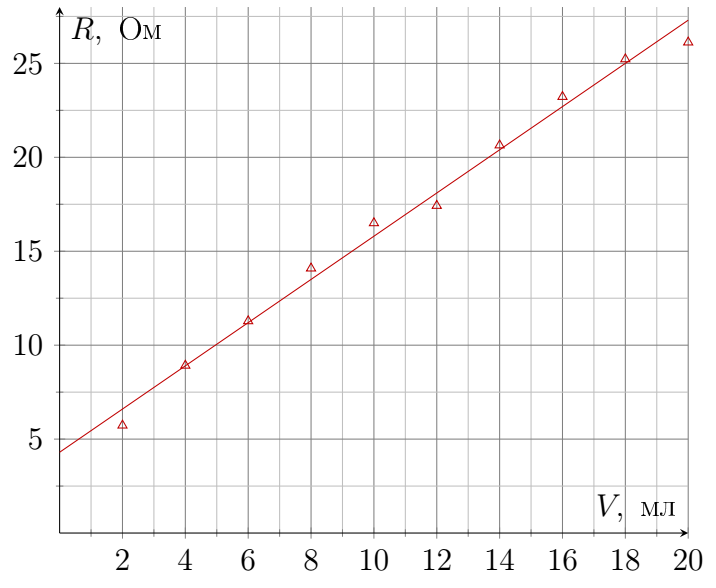
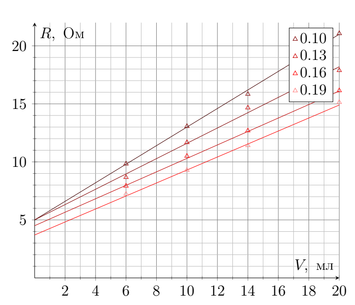
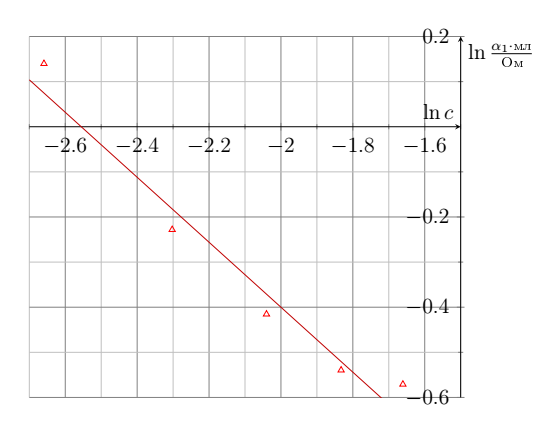
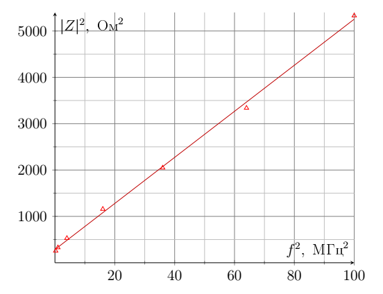
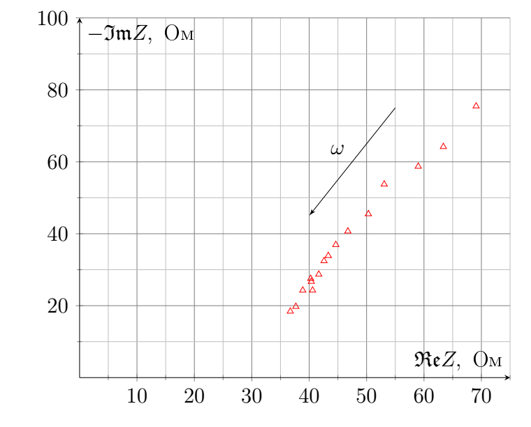
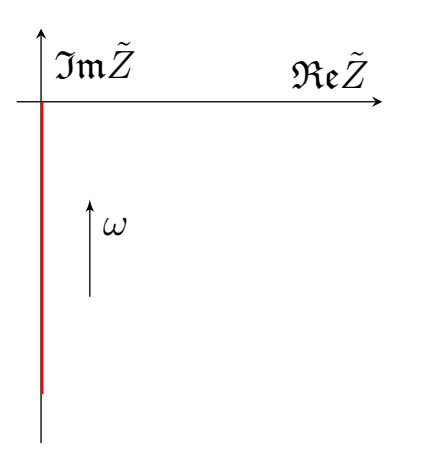
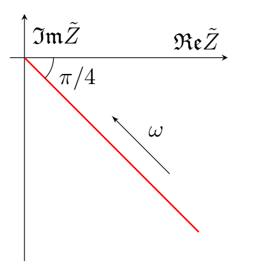
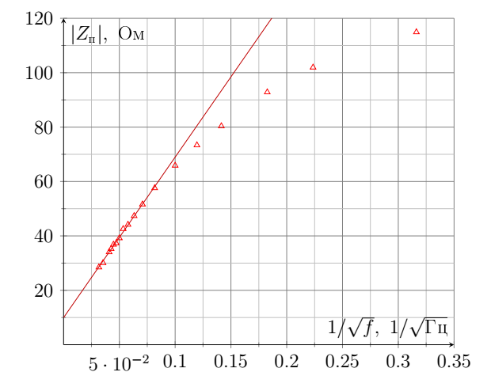

X23 (2023) — English translation


c 0.07 0.1 0.13 0.16 0.19 $\alpha_1,~\frac{\text{\Omega}}{cm^3}$ 1.15 0.80 0.66 0.58 0.56 $R_1,~\text{\Omega}$ 4.3 5.0 4.9 4.5 3.7
Let's write down Newton's II law: \[ Eq = kv_\text{y} \]
By definition $I = \frac{dq}{dt}$, in this case, a flow of particles with an area $S$ and a charge $q$ moving at a constant speed $v$ forms the following current: \[ I = \frac{dq}{dt}= nvSq \tag{1}\] Then the current in our case consists of two ion flows. The ion concentrations are equal from the condition of electrical neutrality: \[ I = nSe \frac{Ee}{k_{\rm Na^+}} + nSe \frac{Ee}{k_{\rm Cl^-}}.\] The field $E$ is expressed through the potential difference as $U/L$.
We will solve the problem using the method of complex amplitudes: \[ U \cos \omega t = \mathfrak{Re} \, U e^{i \omega t}. \] Then the complex electric field $E$ inside the medium is: \[ \tilde{E} = \frac{U}{L} e^{i \omega t}. \] We write Newton’s II law for a particle in an alternating field $Ee^{i\omega t}$: \[ m\dot{v} + kv = Eq e^{i \omega t}.\] Our own solutions are exponentially decaying, so we are only interested in a particular solution of the form $v=\tilde{B} e^{i \omega t}$: \[ i\omega m \tilde{B} + k\tilde{B} = Eq \quad \Rightarrow \quad \tilde{B} = \frac{Eq}{i \omega m + k} = \frac{Eq}{k} \frac{1}{1 + i\omega\frac{m}{k}} = \frac{Eq}{k} \frac{1}{\sqrt{1+\frac{\omega^2 m^2}{k^2} }}e^{-i\arctan \frac{\omega m}{k}}.\] Complex Let's recalculate the current $\tilde{I}$ taking into account equation (1): \[ \tilde{I} = \frac{nSe^2 U}{Lk_{\rm Na^+}} \frac{1}{\sqrt{1+\frac{\omega^2 m_{\rm Na^+}^2}{k_{\rm Na^+}^2} }} e^{-i\arctan \frac{\omega m_{\rm Na^+}}{k_{\rm Na^+}} +i \omega t} + \frac{nSe^2 U}{Lk_{\rm Cl^-}} \frac{1}{\sqrt{1+\frac{\omega^2 m_{\rm Cl^-}^2}{k_{\rm Cl^-}^2} }} e^{-i\arctan \frac{\omega m_{\rm Cl^-}}{k_{\rm Cl^-}}+i \omega t}\] Let's move from the complex current by taking the real part.
The impedance of one type of ion is obviously expressed from the already obtained equations \[ \tilde{Z} = \frac{Lk}{nSq^2} \left( 1+ i \omega \frac{m}{k} \right),\], while the currents add up at the same voltages, which means that impedances $\rm Na^+$ and $\rm Cl^-$ are “connected” in parallel, and there is also a resistor $R_\text{п}$ in series with them.
If the phase difference is negligible, then the complex parts can be neglected and the behavior of the system corresponds to the behavior at a constant voltage.

Let's simplify the formula for impedance from B6: \[ \tilde{Z} = R_\text{п} + \frac{L}{nSe^2} \frac{(k_{\rm Na^+} + i \omega m_{\rm Na^+})(k_{\rm Cl^-} + i \omega m_{\rm Cl^-})}{(k_{\rm Na^+} + k_{\rm Cl^-}) + i \omega (m_{\rm Na^+}+m_{\rm Cl^-})} \] The first approximation occurs at the multiplication stage: \[ \tilde{Z} = R_\text{п} + \frac{L}{nSe^2} \frac{ -\omega^2 m_{\rm Na^+} m_{\rm Cl^-}+ i \omega( m_{\rm Na^+}k_{\rm Cl^-} +m_{\rm Cl^-}k_{\rm Na^+}) }{(k_{\rm Na^+} + k_{\rm Cl^-}) + i \omega (m_{\rm Na^+}+m_{\rm Cl^-})} \] Multiply the numerator and denominator by the complex conjugate of the denominator and neglect again: \[ \tilde{Z} = R_\text{п} + \frac{L}{nSe^2} \frac{ - \omega^2 m_{\rm Na^+} m_{\rm Cl^-} (k_{\rm Na^+} + k_{\rm Cl^-})+ i\omega^3 m_{\rm Na^+} m_{\rm Cl^-} ( m_{\rm Na^+} + m_{\rm Cl^-}) + \omega^2 ( m_{\rm Na^+}k_{\rm Cl^-} +m_{\rm Cl^-}k_{\rm Na^+}) (m_{\rm Na^+} + m_{\rm Cl^-}) }{ \omega ^2(m_{\rm Na^+}+m_{\rm Cl^-})^2} \]
According to the last theoretical point, the graph of $|\tilde{Z}|^2$ versus $f^2$ is linear.

Let's write the formula based on the model described in the condition: \[ \mu_\text{eff} = \frac{(\mu_{\rm Na}+ N \mu_{\rm H_2 O})\cdot (\mu_{\rm Cl}+ N \mu_{\rm H_2 O})}{\mu_{\rm Na}+ N \mu_{\rm H_2 O} + \mu_{\rm Cl}+ N \mu_{\rm H_2 O}}\] Let's transform it to a quadratic equation for $N$: \[ N^2 + N \left( \frac{\mu_{\rm Na}+\mu_{\rm Cl}- 2 \mu_\text{eff} }{\mu_{\rm H_2O}} \right) + \frac{\mu_{\rm Na}\mu_{\rm Cl} - \mu_\text{eff} (\mu_{\rm Na} + \mu_{\rm Cl})}{\mu_{\rm H_2O}^2}=0\] Due to the fact that $\mu_\text{eff}$ is very larger, in fact, $N=\frac{2\mu_\text{eff}}{\mu_{\rm H_2O}}=1.8\cdot 10^{7}$. It can be concluded that the measured inductance is in no way related to the theoretically considered effect. Meanwhile, the inductance of a turn with a current radius of $10~\text{cm}$ can be estimated as $10^{-6}~\text{H}$, which is of the same order as the root of the slope coefficient.


Let's write down the voltage drop per unit length of the conductor: \[ -R_ldx \, \tilde{I} = \tilde{\varphi}(x+dx) - \tilde{\varphi}(x) \]
Current through unit length of capacitor \[ \frac{\tilde{I}(x+dx) - \tilde{I}(x)}{i\omega C_l dx} = -\tilde{\varphi} (x) \]
If the current is not zero, then it flows through an infinitesimal capacitance, which means $\varphi(0) \to \infty$.
We obtain a differential equation on $\tilde{\varphi}(x)$: \[ \tilde{\varphi}'' - i \omega C_l R_l \tilde{\varphi} = 0 \] This is a homogeneous linear differential equation of the second order. Let's find our own numbers: \[ \lambda^2 = i \omega C_l R_l. \] \[ \lambda_1 = e^{\frac{i \frac{\pi}{2}}{2}} \sqrt{\omega C_l R_l} = (1+i) \sqrt{\frac{\omega R_l C_l}{2}} \] \[ \lambda_2 = e^{\frac{i \frac{\pi}{2}+2\pi i}{2}} \sqrt{\omega C_l R_l} = -(1+i) \sqrt{\frac{\omega R_l C_l}{2}} \] Let's denote $\sqrt{\frac{\omega C_l R_l}{2}}$ as $\zeta$. Then \[ \tilde{\varphi}(x) = A e^{i \zeta x} e^{\zeta x} + B e^{-i \zeta x} e^{-\zeta x}.\] Boundary conditions: $\tilde{\varphi}(l)=Ue^{i \omega t}$, $\tilde{\varphi}'(0) = 0$. \[ \tilde{\varphi}'(0) = A(1+i) \zeta - B(1+i)\zeta = 0 \quad \Rightarrow \quad B = A,\] \[ \tilde{\varphi}(l) = A \left( e^{i \zeta l} e^{\zeta l} + e^{-i \zeta l} e^{-\zeta l} \right) = 2A \cosh(\zeta l + i \zeta l) = U e^{i \omega t} \] As a result, the solution for the potential looks like this: \[ \tilde{\varphi}(x) = U e^{i \omega t} \frac{ \cosh(\zeta x+i \zeta x)}{\cosh(\zeta l+ i \zeta l)}\] Let's find the current $\tilde{I}(l)$: \[ \tilde{I}(l) = -\frac{1}{R_l} \tilde{\varphi}'(l) = -U e^{i \omega t} \frac{\zeta (1+i)}{R_l} \tanh(\zeta l+ i \zeta l), \] then the impedance (the minus arises due to the coordination of the positive direction of the current and the decrease in impedance): \[\tilde{Z}_\text{ц} = \frac{\tilde{\varphi}(l)}{-\tilde{I}(l)}= \frac{R_l}{\zeta (1+i) \tanh (\zeta l + i \zeta l) } = \sqrt{\frac{R_l}{2\omega C_l}} \frac{1-i}{\tanh \left( (1+i) \sqrt{\frac{\omega C_l R_l}{2}} l \right)} \] Let's expand $\tanh$: \[\tilde{Z}_\text{ц} = \sqrt{\frac{R_l}{\omega C_l}} \frac{1 - i\tanh \sqrt{\frac{\omega C_l R_l}{2}} l \cdot \tan \sqrt{\frac{\omega C_l R_l}{2}} l}{\tanh \sqrt{\frac{\omega C_l R_l}{2}} l - i\tan \sqrt{\frac{\omega C_l R_l}{2}} l} e^{-i\pi/4}. \]
Let's multiply the numerator and denominator by $\cosh \zeta l \cdot \cos \zeta l$: \[\tilde{Z}_\text{ц} = \sqrt{\frac{R_l}{\omega C_l}} \frac{\cosh \zeta l \cos \zeta l + i \sin \zeta l \sinh \zeta l} {\cos \zeta l \sinh \zeta l + i \cosh \zeta l \sin \zeta l} e^{-i\pi/4}, \] at $\zeta l \gg 1$ the hyperbolic functions $\sinh \zeta l$ and $\cosh \zeta l$ are equal to the exponent $\frac{e^{\zeta l}}{2}$, therefore \[ \tilde{Z}_\text{ц} \simeq \sqrt{\frac{R_l}{\omega C_l}} \frac{\cos \zeta l e^{\zeta l} + i \sin \zeta l e^{\zeta l}}{\cos \zeta l e^{\zeta l} + i \sin \zeta l e^{\zeta l}}e^{-i\pi/4} = \sqrt{\frac{R_l}{\omega C_l}}e^{-i\pi/4} \]
Let's combine the results of the previous paragraphs. \[ \tilde{Z}_\text{п} = \frac{1}{\xi S} \sqrt{ \frac{\rho}{2\pi r \sigma \omega \left(\frac{1}{\xi} - \pi r^2 \right)} } e^{-i\pi/4}\]

